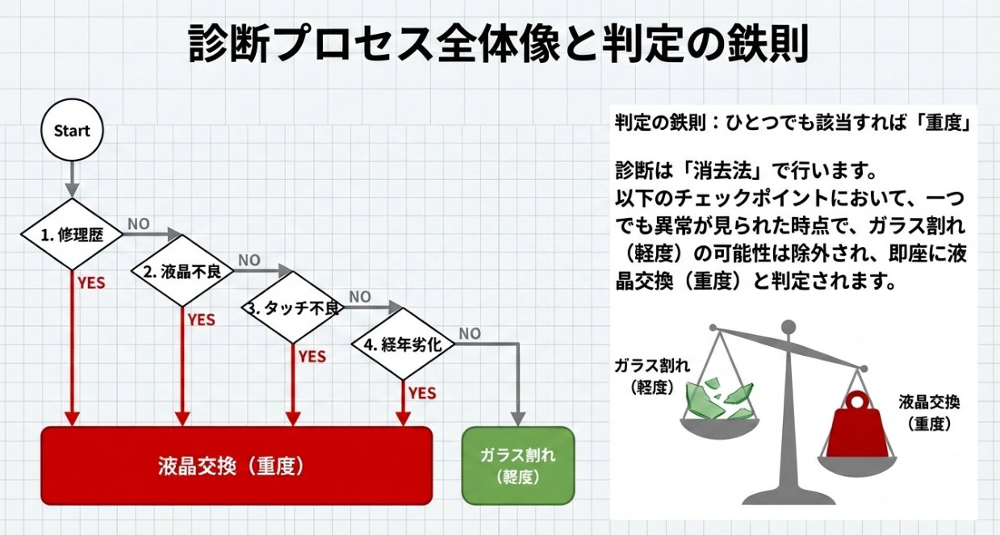
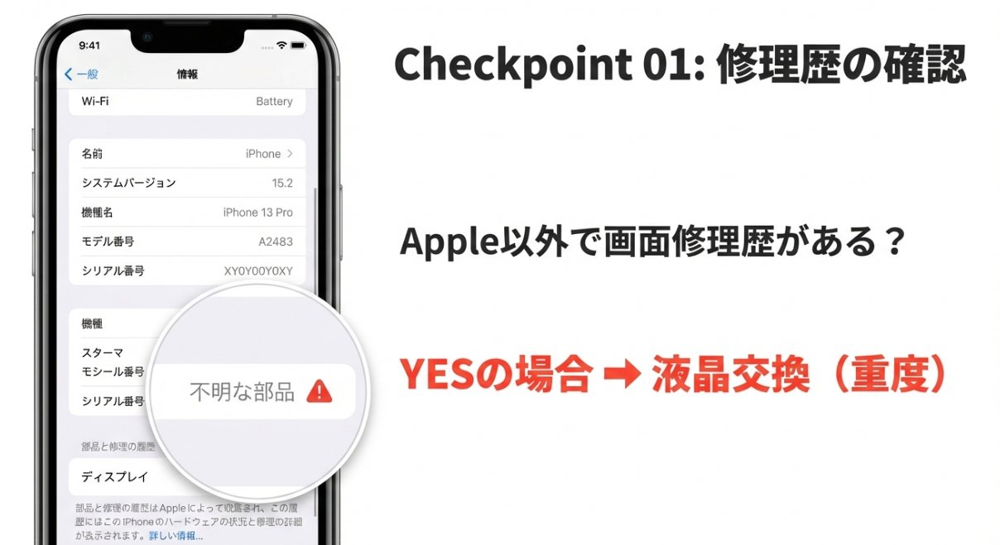
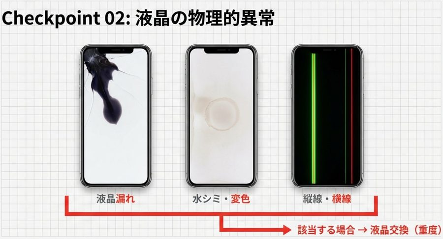
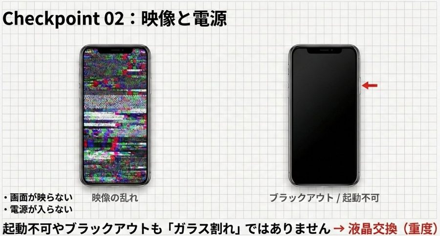
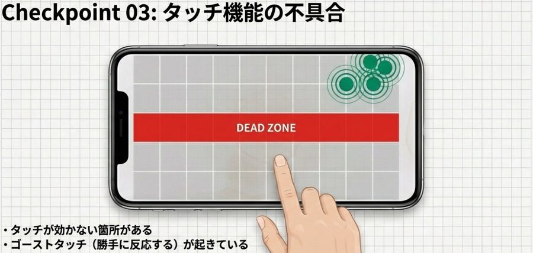
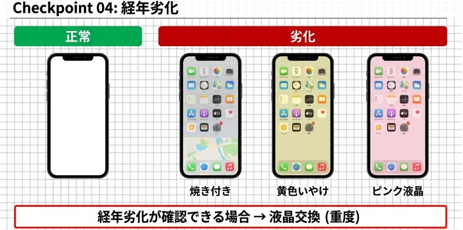
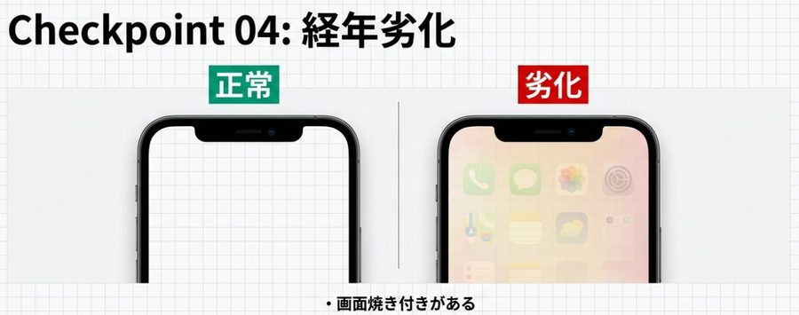

消去法による診断プロセス — ひとつでも該当すれば「重度」
受付時の画面損傷査定を標準化するためのマニュアル







| チェック項目 | 詳細症状 | 判定 |
|---|---|---|
| 修理歴確認 | 外観の分解痕 / 設定で不明な部品 / ヒアリングで非正規修理歴 | 重度 |
| 液晶（見た目） | 漏れ / 変色 / 線 / 水シミ | 重度 |
| 液晶（機能） | 映像乱れ / 映らない / 電源入らない | 重度 |
| タッチ | 効かない箇所 / ゴーストタッチ | 重度 |
| 劣化 | 焼き付き / 黄ばみ / ピンク変色 | 重度 |
| 上記すべて無し | 表面のひび割れのみ | 軽度 |